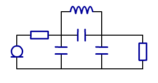
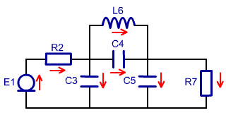
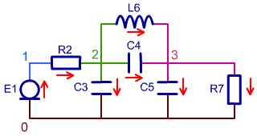
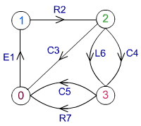
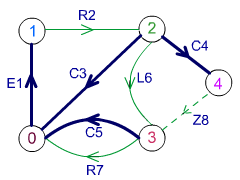
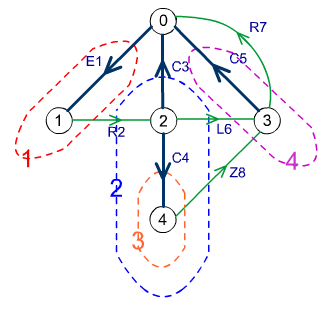
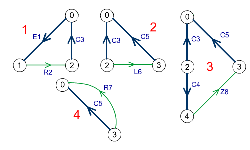
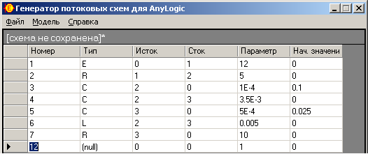

Рисунок 8. Составление системы уравнений.
Рисунок 8. Составление системы уравнений.AnyLogic – одно современных средств имитационного моделирования. Среда AnyLogic позволяет модифицировать, комбинировать объекты, проводить эксперименты с ними и представлять результаты экспериментов в наглядной форме. Программа Stream предназначена для построения моделей потоковых схем в среде моделирования AnyLogic.
Сначала определяется тип всех элементов, входящих в схему. Затем элементы нумеруются таким образом, чтоб номера элементов были уникальными. После этого для каждого элемента выбирается условно положительное направление. Для активных элементов (E, I) условно положительное направление определяет полярность источника, для остальных элементов положительное направление может быть выбрано произвольно.
Пусть, например, нам нужно ввести в Stream следующую электрическую схему (рис. 1).
Рисунок 1.
После всех операций схема будет выглядеть следующим образом (рис. 2).
Рисунок 2.
На электрической схеме узлами эквипотенциальные участки электрической схемы. Выделим узлы на нашей схеме так (рис. 3)
Рисунок 3.
Рисунок 4. Изображение элктрической схемы в виде графа.
Нормальное дерево – дерево, в которое ветви включаются с приоритетом U, C, R, L, I. Алгоритм формирования системы уравнений существенно упрощается, если принять следующее соглашение: элементы U, C всегда входят в дерево, элементы типа L, I – никогда не входят в дерево. Что касается элемента R, то он может быть, по обстоятельствам, либо ребром, либо хордой (входить в дерево или не входить в него).
Рисунок 5. Построение нормального дерева графа и устранение противоречия путем введения дополнительного элемента Z8.
Сечением i-го ребра называют совокупность ветвей, пересекаемых замкнутой линией при условиях:
Рисунок 6. Выделение сечений.
Рисунок 7. Выделение контуров.
Применительно к потоковой схеме следует обратить внимание на следующее: суммы переменных u для каждого контура и переменных i для каждого сечения равны нулю. Кроме того, если n – число ветвей и m – число узлов, то граф имеет n-1 ребро и m-n+1 хорд. Так как сумма разностных переменных по контуру равна нулю, то каждый контур дает нам одно линейно независимое уравнение; в итоге мы можем записать m-n+1 уравнений контуров. Соответственно, каждое сечение также дает нам линейно-независимое уравнение, что в итоге обеспечивает получение n-1 уравнения сечений. В итоге мы получаем (n-1)+(m-n+1)= m, то есть получаем m линейно-независимых уравнений, решение которых определяет m переменных по числу ветвей.
Рисунок 8. Составление системы уравнений.
Каждый элемент схемы представляется строкой в таблице. Чтобы ввести атрибуты элементов, заполните соответствующие столбцы таблицы. Чтобы добавить новый элемент перейдите на последнюю строку таблицы и заполните ее. Для удаления строки из таблицы выделите ее щелчком мыши по маркеру строки и нажмите клавишу Delete.
Добавление элемента к модели происходит только после перехода с редактируемой строки на другую.
При вводе схемы в Stream для каждого необходимо определить следующее:
Номера элементов и узлов – целые неотрицательные числа. Типы элементов – заглавные или строчные латинские буквы e,c,l,r,i. Значения параметров и начальные значения элементов – действительные числа в обычной или экспоненциальной форме (например: “150”, “-3.58”, “1.02E06” и т. д.). Введенная в программу Stream схема будет выглядеть следующим образом (рис. 4).
Рисунок 4.